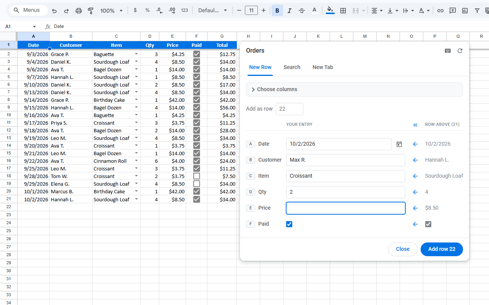
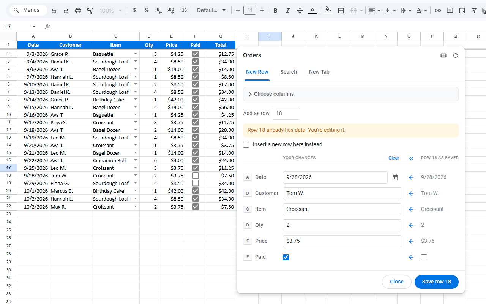
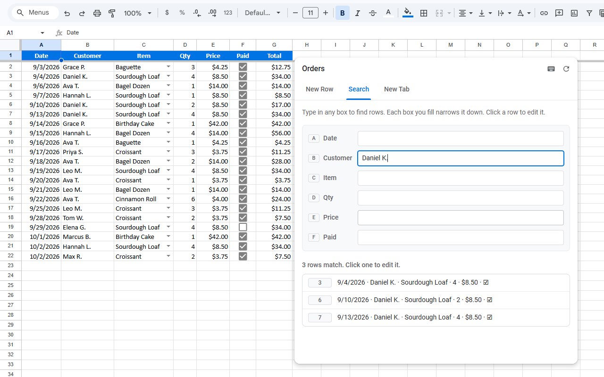

SheetConsole is a Chrome extension that floats a small panel over your spreadsheet. Fill in a form, press Enter, and the row lands in your tab - with the same formatting, the same dropdowns, and nothing overwritten by accident.
Install SheetConsole from the Chrome Web Store



What it does
- New Row - a form built from your tab's own headers: add a row at the end, insert one anywhere, or open an existing row and edit it.
- Copy from the row above - one click copies a value, or all of them.
- Fields that match your columns - dropdowns, checkboxes and dates, as your sheet has them.
- Search - find rows by any column, then click one to edit it.
- New Tab - make a new, empty tab set up just like the one you're on.
Privacy
SheetConsole asks for permission to see and edit your Google Sheets spreadsheets. It uses that only to do what you ask in the panel: to read the tab you have open (its headers, its rows, and how its cells are set up) and to write the rows you add, insert or edit, and the tabs you create. It works only between your browser and Google, and collects nothing. Read the privacy policy.
Contact
Questions or problems: nachum@wheatonwebdev.com.